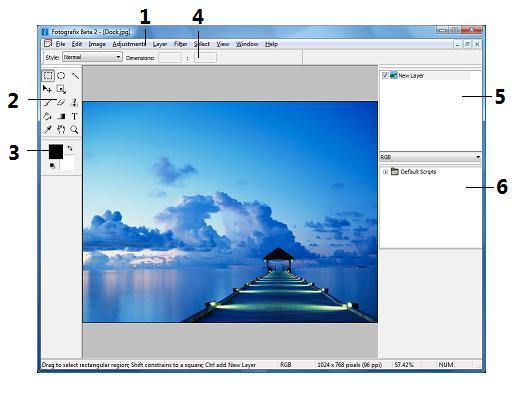

Interface overview

The main window of Fotografix contains 6 major components:
- The menu bar contains commands for opening/saving images, working with layers and performing most image operations. For a description of each menu command, see Menu commands.
- The tool box contains all the tools available for working with images. For more information on the available tools, see Tools.
- The colour palette allows you to choose colours that are used by various tools. For more information, see Using the colour palette.
- The options palette displays extra options for the currently selected tool, if any are available.
- The layers palette provides access to all the layers in an image. For more information, see Working with layers.
- The scripts palette provides access to available scripts. For more information, see Using scripts to automate tasks.
Fotografix supports a multiple document interface, which means that you can simultaneously work with multiple images, each in its own window. You can arrange the windows using the commands under the Window menu.